曾经在 15 年的时候，我在 WeMobileDev 公众号就写过一篇文章《Android 安装包相关知识汇总》，也开源了一个不少同学都使用过的资源混淆工具AndResGuard。
现在再看看这篇 4 年前的文章，就像看到了 4 年前的自己，感触颇多啊。几年过去了，网上随意一搜都有大量安装包优化的文章，那还有哪些“高深”的珍藏秘笈值得分享呢？
时至今日，微信包体积也从当年的 30MB 增长到现在的 100MB 了。我们经常会想，现在 WiFi 这么普遍了，而且 5G 都要来了，包体积优化究竟还有没有意义？它对用户和应用的价值在哪里？
安装包的背景知识
还记得在 2G 时代，我们每个月只有 30MB 流量，那个时候安装包体积确实至关重要。当时我在做“搜狗输入法”的时候，我们就严格要求包体积在 5MB 以内。
几年过去了，我们对包体积的看法有什么改变吗？
1. 为什么要优化包体积
在 2018 年的 Google I/O，Google 透露了 Google Play 上安装包体积与下载转化率的关系图。
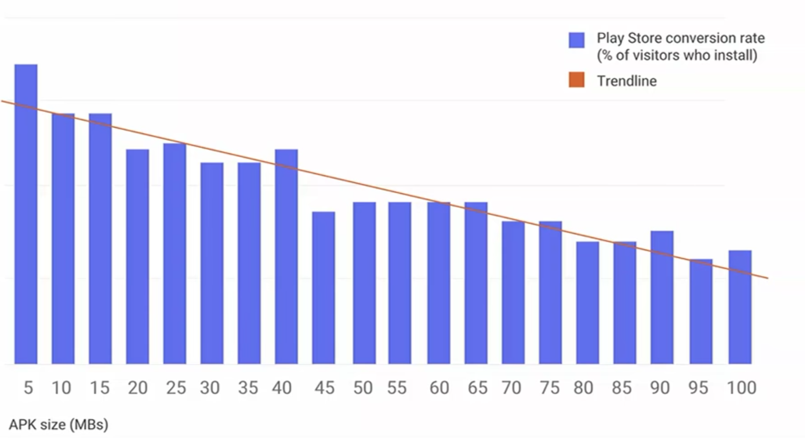
从这张图上看，大体来说，安装包越小，转化率越高这个结论依然成立。而包体积对应用的影响，主要有下面几点：
-
下载转化率。一个 100MB 的应用，用户即使点了下载，也可能因为网络速度慢、突然反悔下载失败。对于一个 10MB 的应用，用户点了下载之后，在犹豫要不要下的时候已经下载完了。但是正如上图的数据，安装包大小与转化率的关系是非常微妙的。10MB 跟 15MB 可能差距不大，但是 10MB 跟 40MB 的差距还是非常明显的。
-
推广成本。一般来说，包体积对渠道推广和厂商预装的单价会有非常大的影响。特别是厂商预装，这主要是因为厂商留给预装应用的总空间是有限的。如果你的包体积非常大，那就会影响厂商预装其他应用。
-
应用市场。苹果的 App Store 强制超过 150MB 的应用只能使用 WiFi 网络下载，Google Play 要求超过 100MB 的应用只能使用APK 扩展文件方式上传，由此可见应用包体积对应用市场的服务器带宽成本还是会有一点压力的。
目前成熟的超级 App 越来越多，很多产品也希望自己成为下一个超级 App，希望功能可以包罗万象，满足用户的一切需求。但这同样也导致安装包不断变大，其实很多用户只使用到很少一部分功能。
下面我们就来看看微信、QQ、支付宝以及淘宝这几款超级 App 这几年安装包增长的情况。
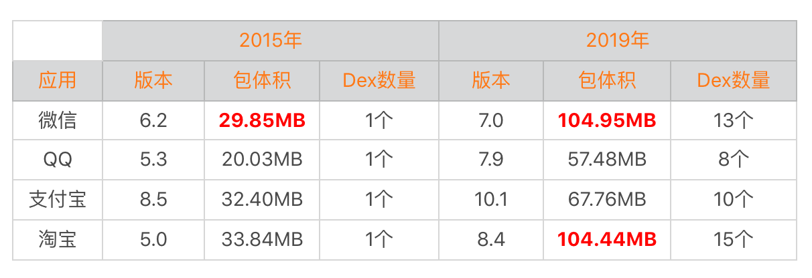
我还记得在 15 年的时候，为了让微信 6.2 版本小于 30MB，我使用了各种各样的手段，把体积从 34MB 降到 29.85MB，资源混淆工具 AndResGuard 也就是在那个优化专项中写的。几年过去了，微信包体积已经涨到 100MB 了，淘宝似乎也不容乐观。相比之下，QQ 和支付宝相对还比较节制。
2. 包体积与应用性能
React Native 5MB、Flutter 4MB、浏览器内核 20MB、Chromium 网络库 2MB…现在第三方开发框架和扩展库越来越多，很多的应用包体积都已经几十是 MB 起步了。
那包体积除了转化率的影响，它对我们应用性能还有哪些影响呢？
-
安装时间。文件拷贝、Library 解压、编译 ODEX、签名校验，特别对于 Android 5.0 和 6.0 系统来说（Android 7.0 之后有了混合编译），微信 13 个 Dex 光是编译 ODEX 的时间可能就要 5 分钟。
-
运行内存。在内存优化的时候我们就说过，Resource 资源、Library 以及 Dex 类加载这些都会占用不少的内存。
-
ROM 空间。100MB 的安装包，启动解压之后很有可能就超过 200MB 了。对低端机用户来说，也会有很大的压力。在“I/O 优化”中我们讨论过，如果闪存空间不足，非常容易出现写入放大的情况。
对于大部分一两年前的“千元机”，淘宝和微信都已经玩不转了。“技术短期内被高估，长期会被低估”，特别在业务高速发展的时候，性能往往就被排到后面。
包体积对技术人员来说应该是非常重要的技术指标，我们不能放任它的增长，它对我们还有不少意义。
-
业务梳理。删除无用或者低价值的业务，永远都是最有效的性能优化方式。我们需要经常回顾过去的业务，不能只顾着往前冲，适时地还一些“技术债务”。
-
开发模式升级。如果所有的功能都不能移除，那可能需要倒逼开发模式的转变，更多地采用小程序、H5 这样开发模式。
包体积优化
国内地开发者都非常羡慕海外的应用，因为海外有统一的 Google Play 市场。它可以根据用户的 ABI、density 和 language 发布，还有在 2018 年最新推出的App Bundle。
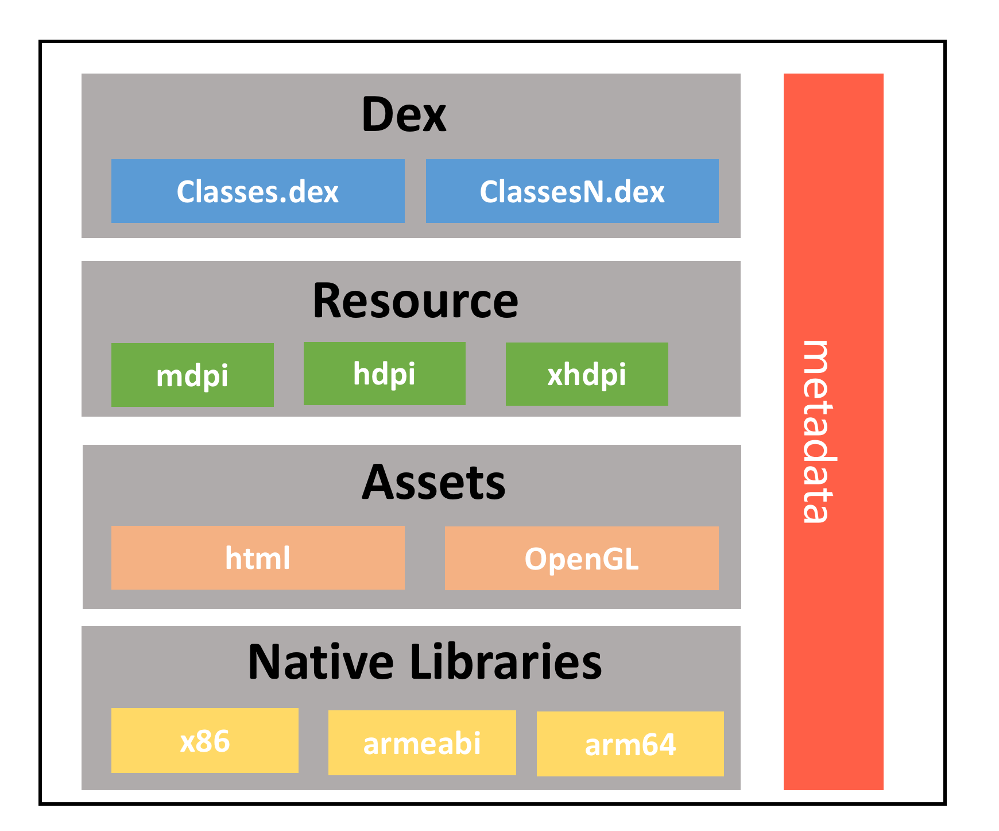
事实上安装包中无非就是 Dex、Resource、Assets、Library 以及签名信息这五部分，接下来我们就来看看对于国内应用来说，还有什么高级“秘籍”。
1. 代码
对于大部分应用来说，Dex 都是包体积中的大头。看一下上面表格中微信、QQ、支付宝和淘宝的数据，它们的 Dex 数量从 1 个增长到 10 多个，我们的代码量真的增长了那么多倍吗？
而且 Dex 的数量对用户安装时间也是一个非常大的挑战，在不砍功能的前提下，我们看看有哪些方法可以减少这部分空间。
ProGuard
“十个 ProGuard 配置九个坑”，特别是各种第三方 SDK。我们需要仔细检查最终合并的 ProGuard 配置文件，是不是存在过度 keep 的现象。
你可以通过下面的方法输出 ProGuard 的最终配置，尤其需要注意各种的 keep *，很多情况下我们只需要 keep 其中的某个包、某个方法，或者是类名就可以了。
-printconfiguration configuration.txt那还有没有哪些方法可以进一步加大混淆力度呢？这时我们可能要向四大组件和 View 下手了。一般来说，应用都会 keep 住四大组件以及 View 的部分方法，这样是为了在代码以及 XML 布局中可以引用到它们。
-keep public class * extends android.app.Activity-keep public class * extends android.app.Application-keep public class * extends android.app.Service-keep public class * extends android.content.BroadcastReceiver-keep public class * extends android.content.ContentProvider-keep public class * extends android.view.View事实上，我们完全可以把非 exported的四大组件以及 View 混淆，但是需要完成下面几个工作：
-
XML 替换。在代码混淆之后，需要同时修改 AndroidManifest 以及资源 XML 中引用的名称。
-
代码替换。需要遍历其他已经混淆好的代码，将变量或者方法体中定义的字符串也同时修改。需要注意的是，代码中不能出现经过运算得到的类名，这种情况会导致替换失败。
// 情况一：变量public String activityName = "com.sample.TestActivity";// 情况二：方法体startActivity(new Intent(this, "com.sample.TestActivity"));// 情况三：通过运算得到，不支持startActivity(new Intent(this, "com.sample" + ".TestActivity"));代码替换的方法，我推荐使用 ASM。不熟悉 ASM 的同学也不用着急，后面我会专门讲它的原理和用法。饿了么曾经开源过一个可以实现四大组件和 View 混淆的组件Mess，不过似乎已经没在维护了，可供你参考。
Android Studio 3.0 推出了新 Dex 编译器 D8 与新混淆工具 R8，目前 D8 已经正式 Release，大约可以减少 3% 的 Dex 体积。但是计划用于取代 ProGuard 的R8依然处于实验室阶段，期待它在未来能有更好的表现。
去掉 Debug 信息或者去掉行号
某个应用通过相同的 ProGuard 规则生成一个 Debug 包和 Release 包，其中 Debug 包的大小是 4MB，Release 包只有 3.5MB。
既然它们 ProGuard 的混淆与优化的规则是一样的，那它们之间的差异在哪里呢？那就是 DebugItem。
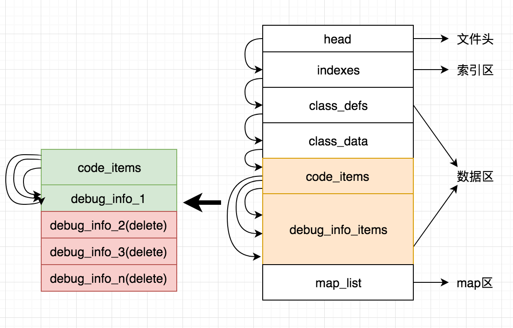
DebugItem 里面主要包含两种信息：
-
调试的信息。函数的参数变量和所有的局部变量。
-
排查问题的信息。所有的指令集行号和源文件行号的对应关系。
事实上，在 ProGuard 配置中一般我们也会通过下面的方式保留行号信息。
-keepattributes SourceFile, LineNumberTable对于去除 debuginfo 以及行号信息更详细的分析，推荐你认真看一下支付宝的一篇文章《Android 包大小极致压缩》。通过这个方法，我们可以实现既保留行号，但是又可以减少大约 5% 的 Dex 体积。
事实上，支付宝参考的是 Facebook 的一个开源编译工具ReDex。ReDex 除了没有文档之外，绝对是客户端领域非常硬核的一个开源库，非常值得你去认真研究。
ReDex 这个库里面的好东西实在是太多了，后面我们还会反复讲到，其中去除 Debug 信息是通过 StripDebugInfoPass 完成。
{ "redex" : { "passes" : [ "StripDebugInfoPass" ] }, "StripDebugInfoPass" : { "drop_all_dbg_info" : "0", // 去除所有的 debug 信息，0 表示不去除 "drop_local_variables" : "1", // 去除所有局部变量，1 表示去除 "drop_line_numbers" : "0", // 去除行号，0 表示不去除 "drop_src_files" : "0", "use_whitelist" : "0", "drop_prologue_end" : "1", "drop_epilogue_begin" : "1", "drop_all_dbg_info_if_empty" : "1" }}Dex 分包
当我们在 Android Studio 查看一个 APK 的时候，不知道你是否知道下图中“defines 19272 methods”和“references 40229 methods”的区别。
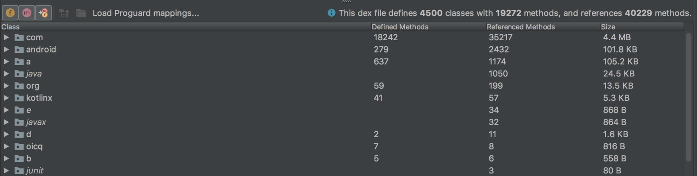
关于 Dex 的格式以及各个字段的定义，你可以参考《Dex 文件格式详解》。为了加深对 Dex 格式的理解，推荐你使用 010Editor。
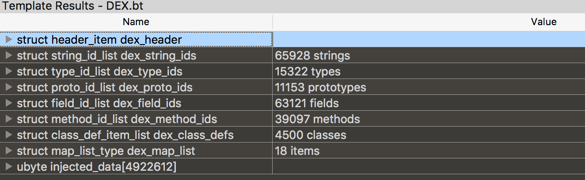
“define classes and methods”是指真正在这个 Dex 中定义的类以及它们的方法。而“reference methods”指的是 define methods 以及 define methods 引用到的方法。
简单来说，如下图所示如果将 Class A 与 Class B 分别编译到不同的 Dex 中，由于 method a 调用了 method b，所以在 classes2.dex 中也需要加上 method b 的 id。
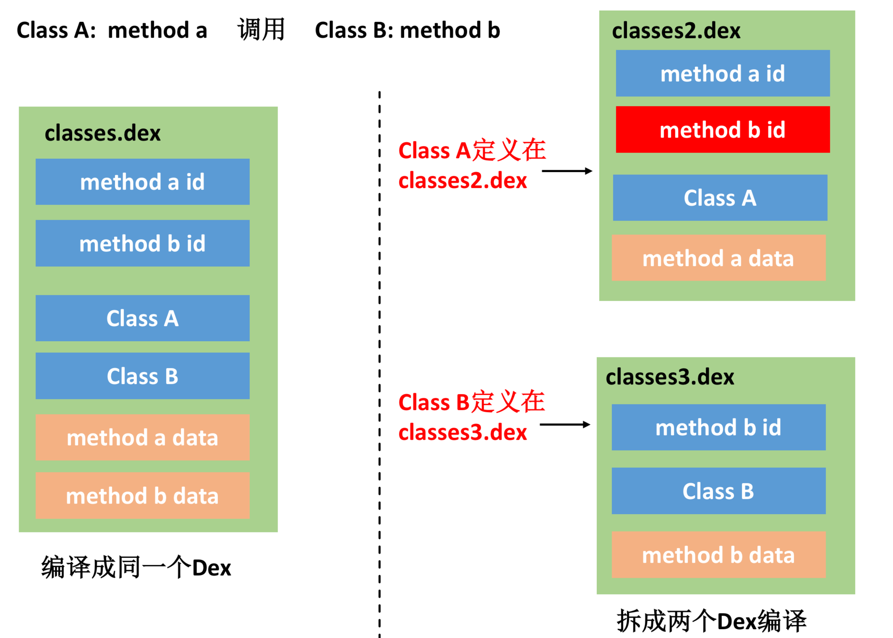
因为跨 Dex 调用造成的这些冗余信息，它对我们 Dex 的大小会造成哪些影响呢？
-
method id 爆表。我们都知道每个 Dex 的 method id 需要小于 65536，因为 method id 的大量冗余导致每个 Dex 真正可以放的 Class 变少，这是造成最终编译的Dex 数量增多。
-
信息冗余。因为我们需要记录跨 Dex 调用的方法的详细信息，所以在 classes2.dex 我们还需要记录 Class B 以及 method b 的定义，造成 string_ids、type_ids、proto_ids 这几部分信息的冗余。
事实上，我自己定义了一个 Dex 信息有效率的指标，希望保证 Dex 有效率应该在 80% 以上。同时，为了进一步减少 Dex 的数量，我们希望每个 Dex 的方法数都是满的，即分配了 65536 个方法。
Dex 信息有效率 = define methods 数量 /reference methods 数量那如何实现 Dex 信息有效率提升呢？关键在于我们需要将有调用关系的类和方法分配到同一个 Dex 中，即减少跨 Dex 的调用的情况。但是由于类的调用关系非常复杂，我们不太可能可以计算出最优解，只能得到局部的最优解。
为了提高 Dex 信息有效率，我在微信时曾参与写过一个依赖分析的工具 Builder。但在微信最新的 7.0 版本，你可以看到上面表中 Dex 的数量和大小都增大了很多，这是因为他们不小心把这个工具搞失效了。Dex 数量的增多，对于Tinker 热修复时间、用户安装时间都有很大影响。如果把这个问题修复，微信 7.0 版本的 Dex 数量应该可以从 13 个降到 6 个左右，包体积可以减少 10MB 左右。
但是我在研究 ReDex 的时候，发现它也提供了这个优化，而且实现得比微信的更好。ReDex 在分析类调用关系后，使用的是贪心算法计算局部最优值，具体算法可查看CrossDexDefMinimizer。
为什么我们不能计算到最优解？因为我们需要在编译速度和效果之间找一个平衡点，在 ReDex 中使用这个优化的配置如下：
{ "redex" : { "passes" : [ "InterDexPass" ] }, "InterDexPass" : { "minimize_cross_dex_refs": true, "minimize_cross_dex_refs_method_ref_weight": 100, "minimize_cross_dex_refs_field_ref_weight": 90, "minimize_cross_dex_refs_type_ref_weight": 100, "minimize_cross_dex_refs_string_ref_weight": 90 }}那么通过 Dex 分包可以对包体积优化多少呢？因为 Android 默认的分包方式做得实在不好，如果你的应用有 4 个以上的 Dex，我相信这个优化至少有 10% 的效果。
Dex 压缩
我曾经在逆向 Facebook 的 App 时惊奇地发现，它怎么可能只有一个 700 多 KB 的 Dex。Google Play 是不允许动态下发代码的，那它的代码都放到哪里了呢？
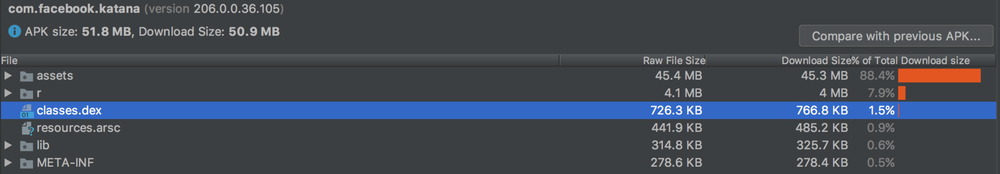
事实上，Facebook App 的 classes.dex 只是一个壳，真正的代码都放到 assets 下面。它们把所有的 Dex 都合并成同一个 secondary.dex.jar.xzs 文件，并通过 XZ 压缩。
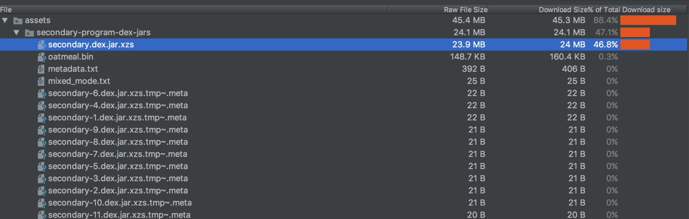
XZ 压缩算法和 7-Zip 一样，内部使用的都是 LZMA 算法。对于 Dex 格式来说，XZ 的压缩率可以比 Zip 高 30% 左右。但是不知道你有没有注意到，这套方案似乎存在一些问题：
-
首次启动解压。应用首次启动的时候，需要将 secondary.dex.jar.xzs 解压缩，根据上图的配置信息，应该一共有 11 个 Dex。Facebook 使用多线程解压的方式，这个耗时在高端机是几百毫秒左右，在低端机可能需要 3～5 秒。这里为什么不采用 Zstandard 或者 Brotli 呢？主要是压缩率与解压速度的权衡。
-
ODEX 文件生成。前面我就讲过，当 Dex 非常多的时候会增加应用的安装时间。对于 Facebook 的这个做法，首次生成 ODEX 的时间可能就会达到分钟级别。Facebook 为了解决这个问题，使用了 ReDex 另外一个超级硬核的方法，那就是oatmeal。
oatmeal 的原理非常简单，就是根据 ODEX 文件的格式，自己生成一个 ODEX 文件。它生成的结果跟解释执行的 ODEX 一样，内部是没有机器码的。
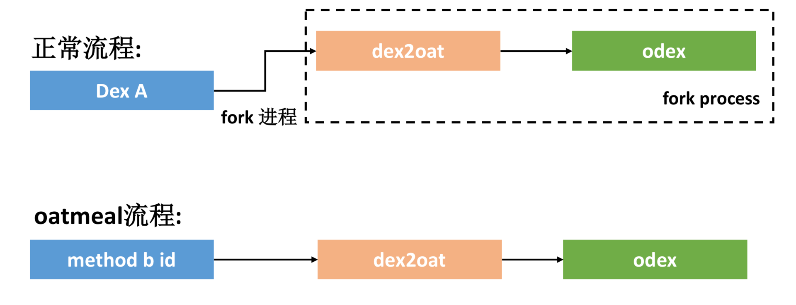
如上图所示，对于正常的流程，我们需要 fork 进程来生成 dex2oat，这个耗时一般都比较大。通过 oatmeal，我们直接在本进程生成 ODEX 文件。一个 10MB 的 Dex，如果在 Android 5.0 生成一个 ODEX 的耗时大约在 10 秒以上，在 Android 8.0 使用 speed 模式大约在 1 秒左右，而通过 oatmeal 这个耗时大约在 100 毫秒左右。
我一直都很想把 oatmeal 引入进 Tinker，但是比较担心兼容性的问题。因为每个版本 ODEX 格式都有一些差异，oatmeal 是需要分版本适配的。
2. Native Library
现在音视频、美颜、AI、VR 这些功能在应用越来越普遍，但这些库一般都是使用 C 或者 C++ 写的，也就是说，我们的 APK 中 Native Library 的体积越来越大了。
对于 Native Library，传统的优化方法可能就是去除 Debug 信息、使用 c++_shared 这些。那我们还有没有更好的优化方法呢？
Library 压缩
跟 Dex 压缩一样，Library 优化最有效果的方法也是使用 XZ 或者 7-Zip 压缩。
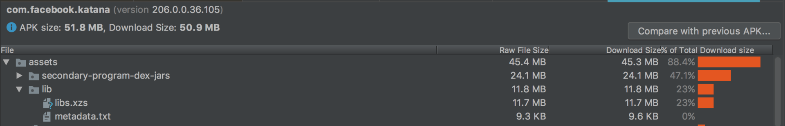
在默认的 lib 目录，我们只需要加载少数启动过程相关的 Library，其他的 Library 我们都在首次启动时解压。对于 Library 格式来说，压缩率同样可以比 Zip 高 30% 左右，效果十分惊人。
Facebook 有一个 So 加载的开源库SoLoader，它可以跟这套方案配合使用。和 Dex 压缩一样，压缩方案的主要缺点在于首次启动的时间，毕竟对于低端机来说，多线程的意义并不大，因此我们要在包体积和用户体验之间做好平衡。
Library 合并与裁剪
对于 Native Library，Facebook 中的编译构建工具Buck也有两个比较硬核的高科技。当然在官方文档中是完全找不到的，它们都隐藏在源码中。
-
Library 合并。在 Android 4.3 之前，进程加载的 Library 数量是有限制的。在编译过程，我们可以自动将部分 Library 合并成一个。具体思路你可以参考文章《Android native library merging》以及Demo。
-
Library 裁剪。Buck 里面有一个relinker的功能，原理就是分析代码中 JNI 方法以及不同 Library 的方法调用，找到没有无用的导出 symbol，将它们删掉。这样 linker 在编译的时候也会把对应的无用代码同时删掉，这个方法相当于实现了 Library 的 ProGuard Shrinking 功能。
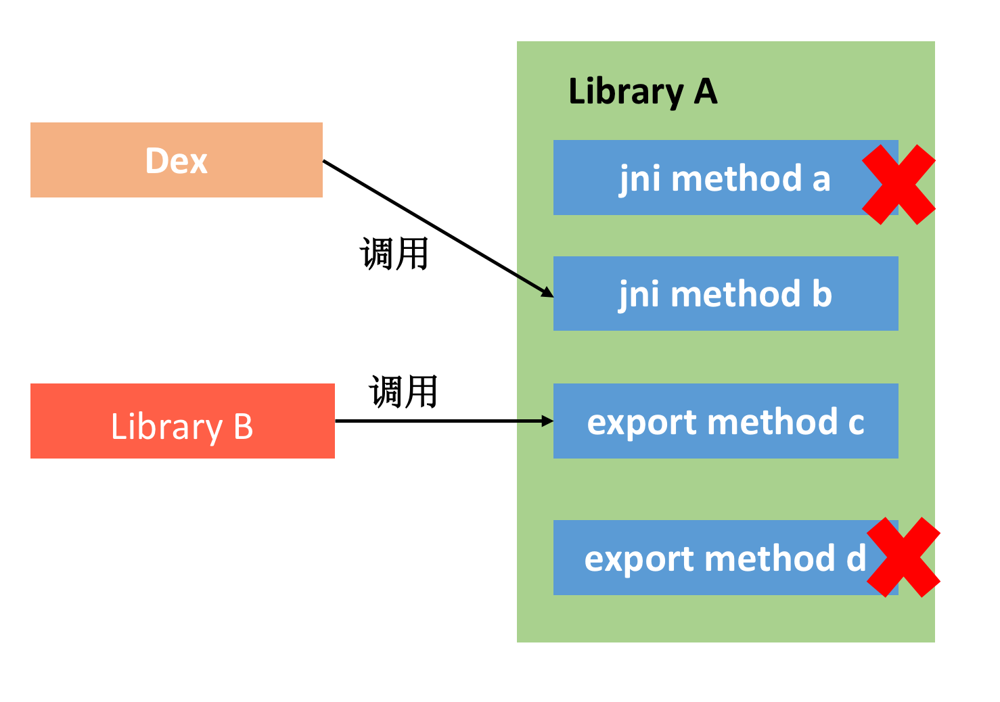
包体积监控
关于包体积，如果一直放任不管，几个版本之后就会给你很大的“惊喜”。我了解到一些应用对包体积卡得很紧，任何超过 100KB 的功能都需要审批。
对于包体积的监控，通常有下面几种：
-
大小监控。这个非常好理解，每个版本跟上一个版本包体积的对比情况。如果某个版本体积增长过大，需要分析具体原因，是否有优化空间。
-
依赖监控。每一版本我们都需要监控依赖，这里包括新增 JAR 以及 AAR 依赖。这是因为很多开发者非常不细心，经常会不小心把一些超大的开源库引进来。
-
规则监控。如果发现某个版本包体积增长很大，我们需要分析原因。规则监控也就是将包体积的监控抽象为规则，例如无用资源、大文件、重复文件、R 文件等。比如我在微信的时候，使用ApkChecker实现包体积的规则监控。
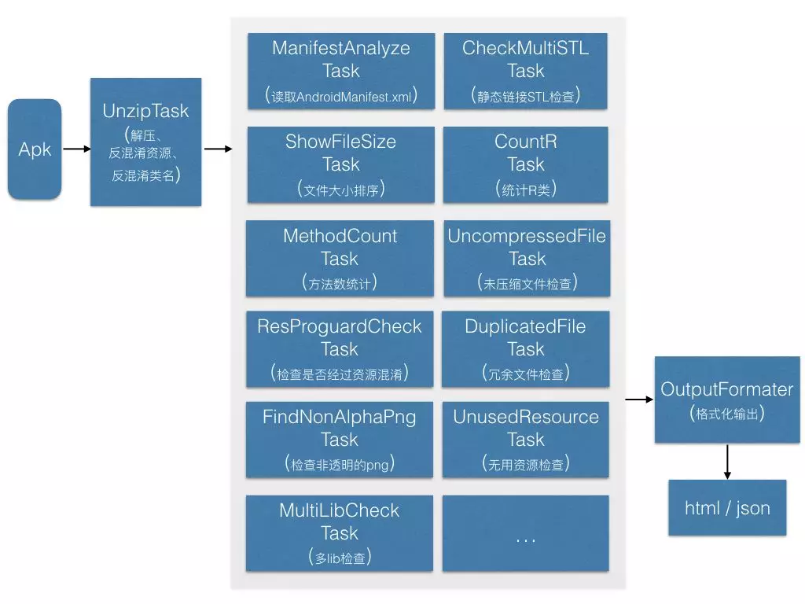
包体积的监控最好可以实现自动化与平台化，作为发布流程的其中一个环节。不然通过人工的方式，很难持续坚持下去。
总结
今天我们一起分析了实现难度比较大的包体积优化方法，可能有人会想这些方法实现难度那么大，真的有价值吗？根据我的理解，现在我们已经到了移动优化的“深水区”，网上那些千篇一律的文章已经无法满足需求。也就是说，简单的方法我们都掌握了，而且也都已经在做了，需要考虑接下来应该如何进一步优化。
这时候就需要静下心来，学会思考与钻研，再往底层走走。我们要去研究 APK 的文件格式，进一步还要研究内部 Dex、Library 以及 Resource 的文件格式。同时思考整个编译流程，才能找到那些可以突破的地方。
在实现 AndResGuard 的时候，我就对 resources.arsc 格式以及 Android 加载资源的流程有非常深入的研究。几年过去了，对于资源的优化又有哪些新的秘籍呢？我们下一期就会讨论“资源优化”这个主题。
从 Buck 和 ReDex 看出来，Facebook 比国内的研究真的要高深很多，希望他们可以补充一些文档，让我们学习起来更轻松一些。
课后作业
你的应用会关注包体积吗？你做过哪些包体积优化的工作，有哪些好的方法可以跟同学们分享呢？欢迎留言跟我和其他同学一起讨论。
今天的练习Sample，尝试使用 ReDex 这个项目来优化我们应用的包体积，主要有下面几个小任务：
-
strip debuginfo
-
分包优化
COMMUNITY NOTES
读者评论
文章内容丰富，里面各种链接都值得研读一下，👍
项目用了small插件化，ApkChecker不能分析以so库的插件，怎么办？
FaceBook之所以这么强大，不仅仅是因为社交的地位，还有对开源世界的影响，对软件发展的贡献
mess 还是在维护的~
还有个问题，Redex重分包的功能，如果我使用通过-printconfiguration "build/outputs/mapping/proguard-rules.pro"生成的合并之后的Proguard文件，会打印InterDexPass not run because no ProGuard configuration was provided的日志，但我实际上配置了Proguard文件啊
试了下Redex重分包的功能，发现个问题，如果我使用通过-printconfiguration "build/outputs/mapping/proguard-rules.pro"生成的合并之后的Proguard文件，会打印InterDexPass not run because no ProGuard configuration was provided的日志，但我实际上配置了Proguard文件啊
F家的方案总是让人不可思议，经常想大喊，你们至于么，方案搞得这么黑科技！！！以前看fresco和reactnative实现，请问我跪的标准么。😂
Facebook把dex放在assets下那么在首次启动解压后，如何执行dexopt？或者会不会执行该操作？
其实更好奇怎样在启动速度快的要求下 减少包体大小 还是这两者必须择一呢